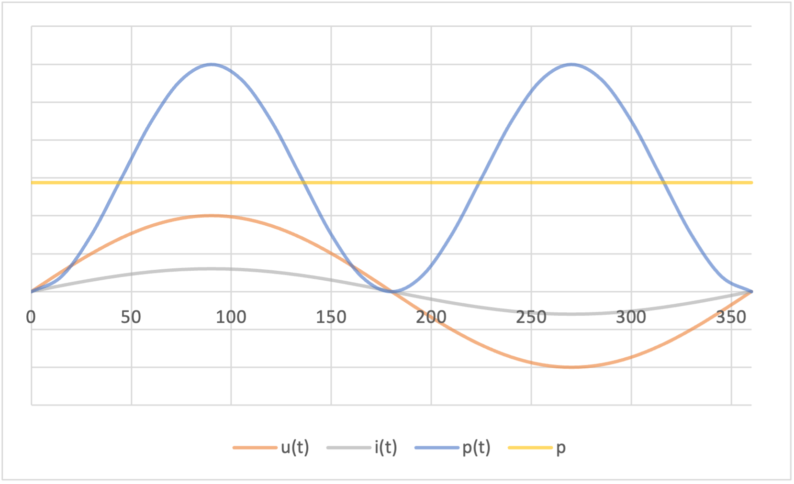

Widerstand im Wechselstromkreis
Die Gesetze der Gleichstromtechnik gelten auch im Wechselstromkreis
Wirkwiderstand
Ohmsche Widerstände werden auch noch Wirkwiderstände genannt.
Spannung, Strom, Leistung
Wird ein ohmscher Widerstand \( R \) an eine sinusförmige Wechselspannung gelegt, so flieβt in ihm ein sinusförmiger Wechselstrom. Strom und Spannung liegen dabei in Phase, das heiβt beim Nulldurchgang der Spannungskurve hat auch die Stromkurve ihren Nulldurchgang.
$$u\left( t\right) =\hat{u} \cdot \sin \left( \omega t\right) $$ $$ i\left( t\right) =\hat{i} \cdot \sin \left( \omega t\right) $$Herleitung Leistung
Die vom Widerstand aufgenommene Wirkleistung kann in jedem Augenblick durch berechnet werden.
$$ p\left( t\right) =u\left( t\right) \cdot i\left( t\right) =\hat{u} \cdot \hat{i} \cdot \sin^{2} \left( \omega t\right) $$ $$ mit\ \sin^{2} \left( \omega t\right) =\frac{1}{2} \cdot \left[ 1-\cos \left( 2\omega t\right) \right] $$Siehe Collection des Formules Trigonométriques.
$$ p\left( t\right) =\frac{\hat{u} \cdot \hat{i} }{2} \left[ 1-\cos \left( 2\omega t\right) \right] =\frac{\hat{u} \cdot \hat{i} }{\sqrt{2} \cdot \sqrt{2} } \left[ 1-\cos \left( 2\omega t\right) \right] $$ $$ \Leftrightarrow p\left( t\right) =U\cdot I\cdot \left[ 1-\cos \left( 2\omega t\right) \right] $$ Wirkleistung
Die Leistung ist zu jedem Zeitpunkt positiv, das heiβt der Leistungsfluss verläuft stets vom Generator zum Widerstand. Die Leistungskurve stellt dabei eine Sinuskurve mit der doppelten Grundfrequenz dar.
Definition
Eine Wirkleistung ist eine Leistung, die zwischen \( p_{min}=0 \) und \( p_{min}= \hat{u} \cdot \hat{i} \) hin und her schwingt.